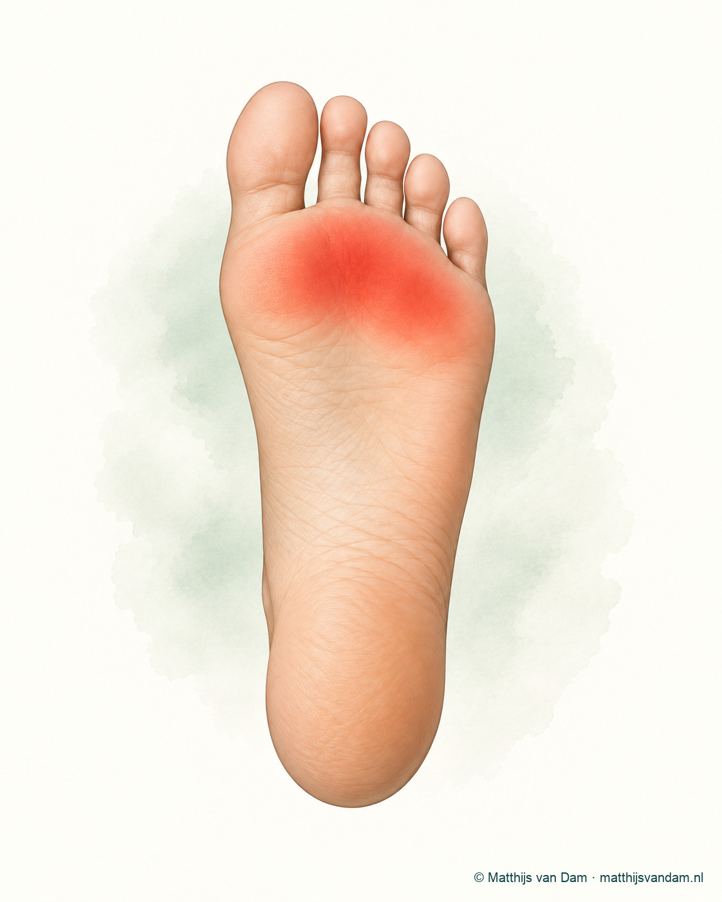

Wat is metatarsalgie?
De middenvoetsbeentjes eindigen in de voorvoet vlak achter de tenen. Die kopjes dragen veel druk bij staan, lopen, traplopen, rennen en afzetten. Metatarsalgie betekent dat er pijn zit rond dit gebied: onder de bal van de voet. De term zegt dus vooral waar de pijn zit, niet automatisch waarom die pijn er is.
Soms is er een duidelijke mechanische verklaring, zoals een hoge voetboog, veranderde teenstand, een scheve grote teen (hallux valgus), een langere tweede teen, eeltvorming of schoenen die de druk naar voren duwen. Soms ontstaat de klacht na meer belasting, sporten of veel staan. En soms blijkt er een specifieke onderliggende oorzaak, zoals een stressreactie, klachten rond een teengewricht of zenuwirritatie.

Welke klachten passen erbij?
Veel mensen voelen pijn of druk onder de bal van de voet. De pijn kan zeurend, scherp, brandend of stekend zijn en neemt vaak toe bij lang staan, lopen, sporten of op blote voeten lopen op harde ondergrond. Soms is er eelt precies onder de pijnlijke plek, of voelt het alsof er te veel druk op een klein gebied komt.
Het klachtenpatroon kan wisselen. Bij de een staat drukpijn onder een middenvoetskopje op de voorgrond; bij een ander is er meer algemene voorvoetvermoeidheid. Tinteling of doofheid kan voorkomen, maar wanneer dat duidelijk naar tenen uitstraalt, moet ook aan zenuwklachten zoals een Morton neuroom worden gedacht.
Wat kan het ook zijn?
Voorvoetpijn heeft een brede differentiaaldiagnose. Bij zenuwachtige pijn met tinteling of uitstraling naar tenen past Morton neuroom beter in beeld. Bij pijn rond de basis van een teen, zwelling of het gevoel dat een teen minder stabiel staat, kunnen MTP- of plantaire plaatklachten meespelen.
Andere oorzaken zijn onder meer stressreactie of stressfractuur, sesamoidklachten onder de grote teen, de ziekte van Freiberg, hallux rigidus, hallux valgus, hamerteen of klauwteen, eelt of huiddruk, jicht, ontstekingsreuma, artrose of klachten na eerdere voorvoetoperaties. Soms zijn er meerdere factoren tegelijk aanwezig.
Metatarsalgie
Meestal pijn onder een of meer middenvoetskopjes, vaak beïnvloed door schoen, eelt, voetstand, teenstand of activiteit.
Morton neuroom
Vaker brandend of tintelend, met uitstraling naar twee tenen en verergering in smalle schoenen.
MTP-/plantaire plaat
Pijn rond de basis van een teen, soms met zwelling, instabiliteit of geleidelijk veranderende teenstand.
Onderzoek en diagnose
De beoordeling begint met de exacte plek van de pijn. Zit de pijn onder een middenvoetskopje, tussen twee middenvoetsbeentjes, onder de grote teen of meer verspreid? Ook eelt, huiddruk, teenstand, voorvoetbreedte, voetboog, achillespeeslengte, gebruikte schoenen en steunzolen kunnen informatie geven.
Bij lichamelijk onderzoek wordt gekeken naar drukpijn, beweeglijkheid van de MTP-gewrichten, stabiliteit van tenen, gevoel in de tenen, stand van de grote teen en afwikkeling. Soms zijn belastingsfoto's zinvol om stand, artrose of stressletsel mee te wegen. Een echo of MRI wordt niet gebruikt om metatarsalgie vast te stellen. Deze onderzoeken kunnen alleen aan de orde zijn wanneer er aanwijzingen zijn voor een andere aandoening, zoals een Morton neuroom, letsel van de plantaire plaat of een stressreactie.
De behandeling
De behandeling begint meestal met druk verminderen en belasting sturen. Dat kan gaan over schoenen met voldoende ruimte, een lagere hak, goede demping, een stijvere of juist beter afwikkelende zool, podotherapeutische drukverdeling, tijdelijk aanpassen van sport en lopen of, wanneer de kuitspier verkort is, gericht rekken van de kuitspier. De juiste keuze hangt af van de oorzaak en de voetvorm.
Ruimte bij de voorvoet, minder hakhoogte en voldoende demping kunnen druk verminderen.
Een zool met voorvoetsteun, metatarsale pelotte of subcapitale steun kan de druk onder de middenvoetskopjes anders verdelen. Wanneer de kuitspier verkort is, kan gericht rekken van de kuitspier ook onderdeel zijn van het verminderen van de voorvoetbelasting.
Tijdelijk minder springen, rennen of lang staan kan helpen om irritatie te laten zakken.

Wanneer specialistische beoordeling relevant kan zijn
Specialistische beoordeling kan passend zijn wanneer klachten blijven bestaan ondanks goede schoen- en zoolmaatregelen, wanneer er duidelijke teenstandafwijkingen zijn, wanneer een stressfractuur of plantaire plaatletsel wordt vermoed, of wanneer eerdere behandelingen of operaties de drukverdeling hebben veranderd.
Een operatie is bij metatarsalgie geen algemene standaardoplossing. Als een operatie wordt besproken, gaat dat meestal over de onderliggende oorzaak: bijvoorbeeld een duidelijke standsafwijking, instabiliteit, artrose, een specifieke teen-/middenvoetsbehandeling of, bij een aantoonbaar verkorte kuitspier, een verlenging van de kuitspier. De verwachting en risico's moeten per situatie worden afgewogen. Lees ook wat ik eerder schreef over de rol van een korte kuitspier en het rekken van de kuit.
Wat bespreek je tijdens een consult?
Neem schoenen, steunzolen en informatie over eerdere behandelingen mee. Het helpt om vooraf te bedenken wanneer de pijn ontstaat: bij de eerste stappen, na langere belasting, alleen in bepaalde schoenen, tijdens sport of juist op blote voeten. Ook eeltplekken en slijtage van schoenen kunnen iets zeggen over drukverdeling.
Waar kan je terecht?
De behandeling van voorvoetklachten, zoals metatarsalgie, begint meestal niet bij de orthopedisch chirurg. Bij nieuwe of niet-acute klachten is de huisarts vaak het eerste aanspreekpunt; afhankelijk van de situatie kunnen podotherapie, fysiotherapie of schoentechnische zorg een rol spelen.
Als specialistische beoordeling passend is, kan de verwijzer gericht naar mij verwijzen via de gebruikelijke zorgkanalen. Bij een verwijzing op mijn naam voer ik de beoordeling in principe zelf uit. De wachttijd kan daardoor soms langer zijn. Voor afspraken, planning, uitslagen en praktische ziekenhuisinformatie zijn de officiële ETZ-kanalen leidend.
Is metatarsalgie al elders vastgesteld of beoordeeld en is er behoefte aan een tweede mening, dan kan de verwijzer daarvoor ook gericht naar mij verwijzen. Ik beoordeel de situatie opnieuw; een tweede mening betekent niet automatisch dat de eerdere beoordeling of behandelrichting verandert.
Veelgestelde vragen
Is metatarsalgie een diagnose?
Metatarsalgie betekent letterlijk pijn rond de middenvoetsbeentjes of onder de bal van de voet. Het is vooral een beschrijving van de plek van de pijn; de onderliggende oorzaak moet apart worden beoordeeld.
Wat is het verschil tussen metatarsalgie en Morton neuroom?
Metatarsalgie gaat vaak over druk- of belastingpijn onder de bal van de voet. Morton neuroom gaat specifieker over irritatie van een gevoelszenuw tussen de middenvoetsbeentjes, vaak met tinteling of uitstraling naar tenen.
Kunnen schoenen met metatarsalgie te maken hebben?
Ja. Schoenen met weinig ruimte, hoge hak, weinig demping of onvoldoende steun kunnen de druk onder de voorvoet vergroten. De betekenis daarvan verschilt per persoon en per voetvorm.
Is een röntgenfoto altijd nodig bij metatarsalgie?
Niet altijd. Bij aanhoudende klachten, verdenking op stressletsel, standsafwijking, artrose of eerdere operatie kan beeldvorming wel zinvol zijn. Het onderzoek en het verhaal bepalen meestal de richting.
Helpt een steunzool bij metatarsalgie?
Ja. Bij metatarsalgie kan een goed passende zool of drukontlastende voorziening de druk onder de voorvoet beter verdelen en daarmee de klachten verminderen. Welke voorziening passend is, hangt af van de oorzaak, de schoen en de manier waarop de voet belast wordt.
Moet ik voor metatarsalgie naar een orthopeed?
Meestal niet direct. De behandeling begint vaak via de huisarts, podotherapeut, fysiotherapeut of schoentechnische zorg. Beoordeling door een orthopedisch chirurg kan zinvol zijn bij aanhoudende pijn ondanks goede schoen- en zoolmaatregelen, een duidelijke teenstandafwijking, verdenking op een stressfractuur of wanneer meerdere oorzaken door elkaar lijken te spelen.